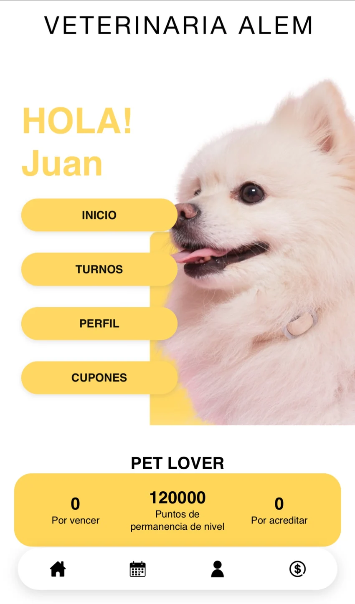
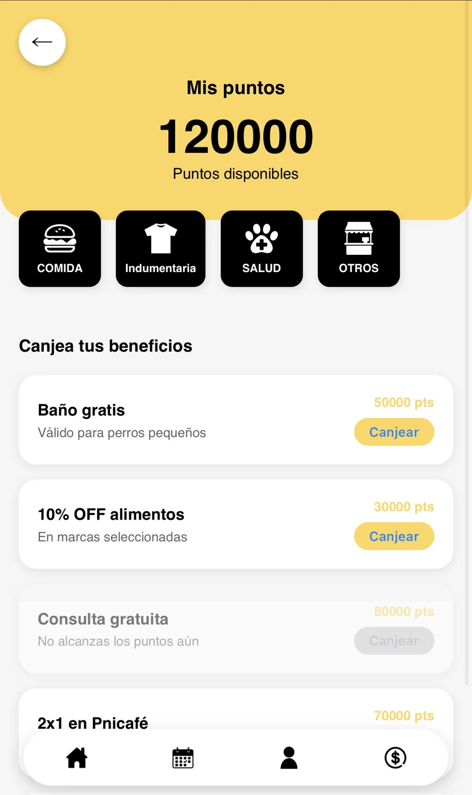
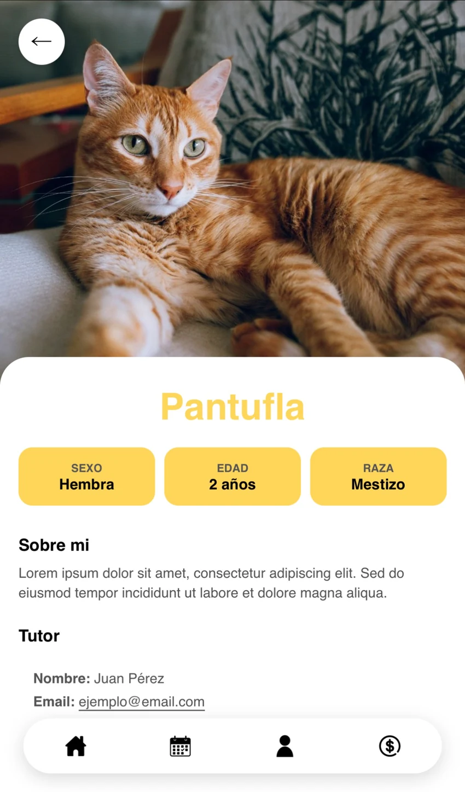
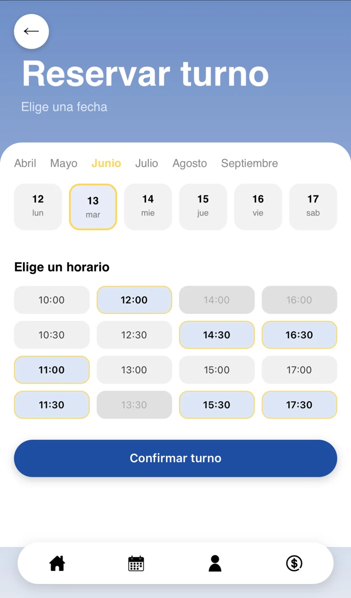
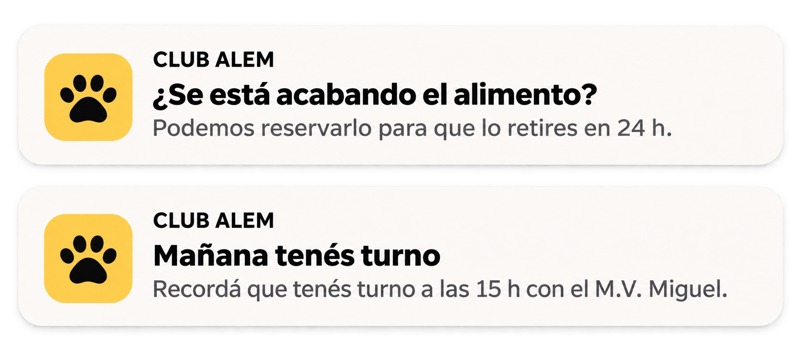

CONCEPTO DE PRODUCTO DIGITAL
Club Alem
Una app de fidelización pensada para reunir el cuidado de las mascotas, los turnos y los beneficios de Veterinaria Alem.
En el inicio reuní los accesos a turnos, perfil y cupones, con un resumen de puntos visible al abrir la app.
EXPLORAR PROTOTIPO ↗
El desafío
Pedir un turno, acordarse de llevar la cartilla de vacunación y consultar los beneficios son tareas que suelen resolverse por separado. Diseñé Club Alem para reunirlas en una sola app y darle a cada cliente un motivo para volver entre una compra y la siguiente.
Armé un prototipo para mostrar cómo se recorrería la app. Las pantallas ilustran la propuesta y muestran datos de ejemplo.
Puntos y beneficios
Cada compra suma
Quería que los puntos tuvieran un valor fácil de entender. Propuse que cada compra sume puntos y que la app muestre el saldo disponible y cuánto cuesta cada canje.
Los puntos podrían usarse para acceder a cupones exclusivos de Alem, descuentos en marcas aliadas y regalos.

Perfil de la mascota
La cartilla, siempre a mano
Pensé el perfil para reunir la edad, el peso y la fecha de cumpleaños de cada mascota, junto con los datos de su tutor.
La propuesta incluye una cartilla digital de vacunación y acceso a la historia clínica. La idea es que el tutor pueda consultar el registro aunque se haya olvidado la cartilla física al ir al turno.

Turnero
Un horario que te quede bien
Diseñé el turnero para consultar qué horarios están disponibles antes de reservar y evitar el ida y vuelta de mensajes para coordinar.
El flujo propuesto permite elegir una sucursal y, si hay preferencia, un profesional. La captura muestra el paso de elegir fecha y horario.

Recordatorios a tiempo

Imaginé una etapa de automatización con avisos de próximas vacunas, recordatorios de reposición de alimento según el ritmo de compra y notificaciones de promociones especiales.
Antes de implementarla, probaría con clientes si les resulta fácil encontrar los beneficios, consultar el perfil y reservar un turno. Esa prueba también serviría para definir qué avisos les gustaría recibir y con qué frecuencia.